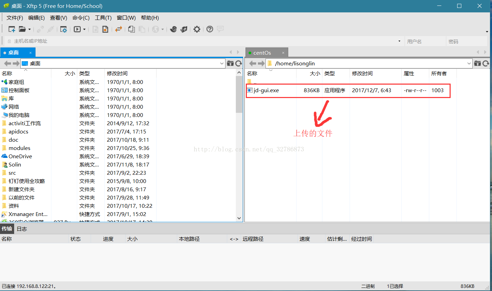
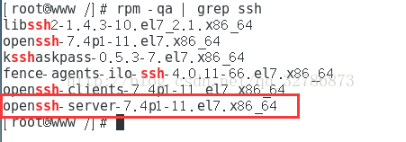
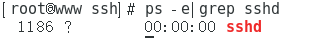
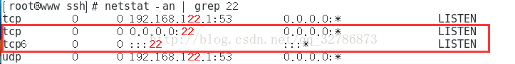
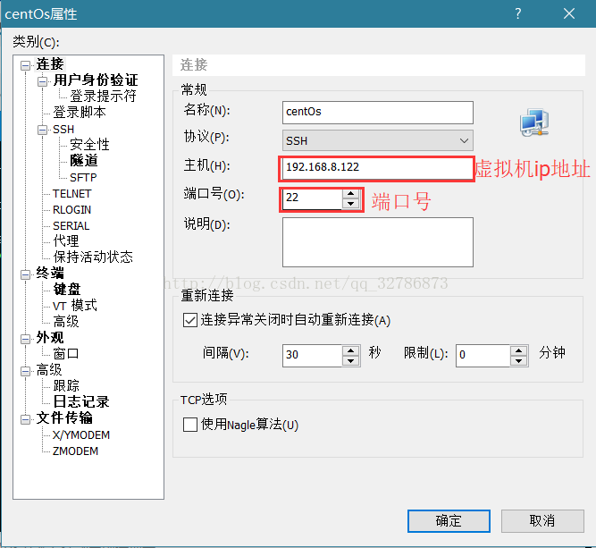
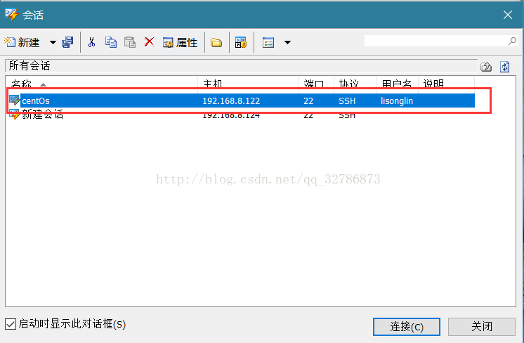
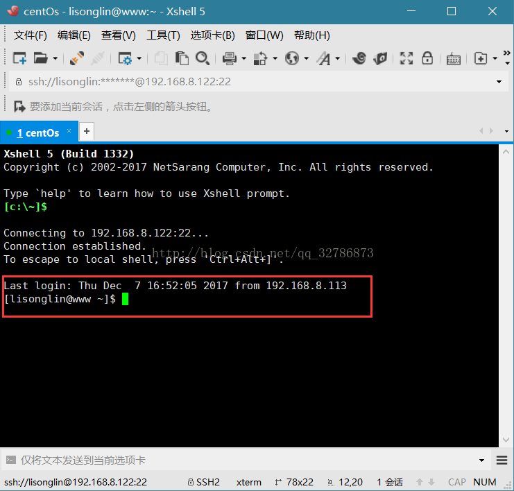

一、安装前的准备
1、关闭防火墙或者开端口权限。一般是firewalld或者iptables。
1 | $ systemctl stop firewalld |
防火墙配置
1 | 如果开启防火墙，请开放21端口，被动模式下设置最大和最小端口范围，并在防火墙开放端口范围。 |
2、关闭sellinux
1 | # 临时关闭 |
二、安装vsftpd
1 | $ yum install -y vsftpd |
三、配置vsftpd
创建vsftpd使用的系统用户，主目录为/home/vsftpd，禁止ssh登录。创建之后所有虚拟用户使用这个系统用户访问文件。
useradd vsftpd -d /home/vsftpd -s /bin/false
方式一、虚拟用户配置
1、创建虚拟用户主目录，比如虚拟用户叫ftp1，执行下面的命令。
1 | $ mkdir -p /home/vsftpd/ftp1 |
2、创建这个虚拟用户
1 | $ vi /etc/vsftpd/loginusers.conf |
3、根据这个文件创建数据库文件
1 | $ db_load -T -t hash -f /etc/vsftpd/loginusers.conf /etc/vsftpd/loginusers.db |
4、启用这个数据库文件
1 | $ vi /etc/pam.d/vsftpd |
5、创建虚拟用户配置文件
1 | $ mkdir /etc/vsftpd/userconf |
6、最后修改主配置文件
1 | $ vi /etc/vsftpd/vsftpd.conf |
配置介绍：
1 | anonymous_enable=NO 禁止匿名用户登录 |
方式二、本地用户配置
配置 FTP 权限
1、了解 VSFTP 配置
vsftpd 的配置目录为 /etc/vsftpd，包含下列的配置文件：
vsftpd.conf 为主要配置文件
ftpusers 配置禁止访问 FTP 服务器的用户列表
user_list 配置用户访问控制——这里的用户默认情况（即在/etc/vsftpd/vsftpd.conf中设置了userlist_deny=YES）下也不能访问FTP服务器
2、阻止匿名访问和切换根目录
匿名访问和切换根目录都会给服务器带来安全风险，我们把这两个功能关闭。编辑 /etc/vsftpd/vsftpd.conf，找到下面两处配置并修改：
1 | # 禁用匿名用户 YES 改为NO anonymous_enable=NO |
3、修改默认根目录
修改ftp的根目录只要修改/etc/vsftpd/vsftpd.conf文件即可：
加入如下几行：
1 | local_root=/var/www/html |
注：local_root 针对系统用户；anon_root 针对匿名用户。
编辑完成后保存配置，重新启动 FTP 服务 service vsftpd restart
其它配置项说明：
1 | anonymous_enable=YES #允许匿名登陆 |
4、 创建 FTP 用户
新建一个不能登录系统用户. 只用来登录ftp服务 ,这里如果没设置用户目录。默认是在home下：
1 | $ useradd ftpuser -d /home/vsftpd -s /bin/false |
为ftpuser用户设置密码：passwd ftpuser
可能用到：
1 | 设置用户的主目录：usermod -d /data/ftp ftpuser |
备注：需要设置根目录权限为777 ，否则会出现无法写入的问题，chmod 777 /var/www/html
四、访问FTP
通过 FTP 客户端工具访问
FTP 客户端工具众多，下面推荐两个常用的：
WinSCP– Windows 下的 FTP 和 SFTP 连接客户端
FileZilla – 跨平台的 FTP 客户端，支持 Windows 和 Mac
本人测试时使用的是Xftp
打开Xftp软件，新建一个会话，输入对应的信息，点击确定(查看ip地址：ip addr)

选中我们新建的会话，点击连接

连接成功后就可以使用Xftp上传文件了

五、要使用Xshell连接，则需要安装openssh-service
查看是否安装ssh安装包，CentOS是被访问者，所以需要安装ssh-server安装包（如果没任何输出显示表示没有安装 openssh-server，可以通过输入
yum install openssh-serve进行安装），查看命令为：rpm -qa | grep ssh，如下图所示，已经安装：

找到/etc/ssh目录下的sshd_config文件，修改一些参数。去掉端口和监听地址的注释；然后允许远程登录；再开启使用用户名密码作为连接验证
开启sshd服务，service sshd start
检查sshd是否开启，ps -e|grep sshd

或者查看22端口是否被监听，netstat -an | grep 22

使用Xshell进行连接，打开Xshell软件，新建一个会话，输入对应的信息，点击确定(查看ip地址：ip addr)

选中我们新建的会话，点击连接

连接成功后就可以使用Xshell执行命令了

参考：https://blog.csdn.net/will0532/article/details/79175478
https://blog.csdn.net/qq_32786873/article/details/78730303